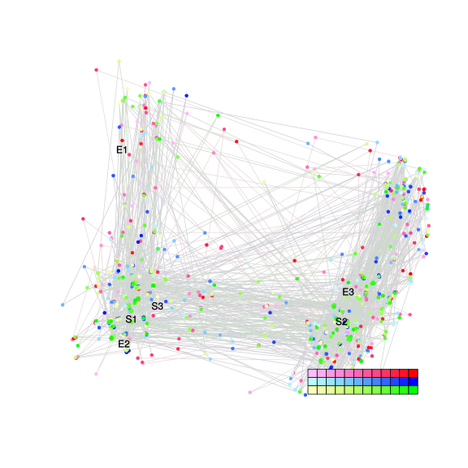
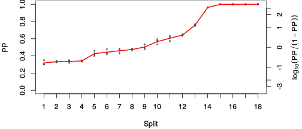
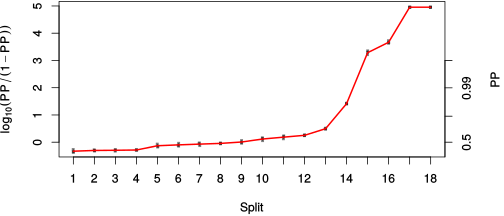

| chain # | burnin | subsample | Iterations (remaining) | command line | subdirectory | directory |
|---|---|---|---|---|---|---|
| 1 | 10000 | 1 | 90000 | /usr/local/bali-phy-3.0-beta2/bin/bali-phy cat_E6_E7_AA_red3_Alpha_all4Manatees_BetaGamma.fas -s 43262 -n cat_E6_E7_red3_Alpha_all4Manatees_BetaGamma_c1 | cat_E6_E7_red3_Alpha_all4Manatees_BetaGamma_c1-1 | /home/willemse/data/trees/BaliPhy/cat_E6_E7 |
| 2 | 10000 | 1 | 90000 | /usr/local/bali-phy-3.0-beta2/bin/bali-phy cat_E6_E7_AA_red3_Alpha_all4Manatees_BetaGamma.fas -s 62878 -n cat_E6_E7_red3_Alpha_all4Manatees_BetaGamma_c2 | cat_E6_E7_red3_Alpha_all4Manatees_BetaGamma_c2-1 | /home/willemse/data/trees/BaliPhy/cat_E6_E7 |
| 3 | 10000 | 1 | 90000 | /usr/local/bali-phy-3.0-beta2/bin/bali-phy cat_E6_E7_AA_red3_Alpha_all4Manatees_BetaGamma.fas -s 13431 -n cat_E6_E7_red3_Alpha_all4Manatees_BetaGamma_c3 | cat_E6_E7_red3_Alpha_all4Manatees_BetaGamma_c3-1 | /home/willemse/data/trees/BaliPhy/cat_E6_E7 |
| P(data|M) = -8750.849 +- 0.355 | Complete sample: 8101 topologies | 95% Bayesian credible interval: 2877 topologies |
Phylogeny Distribution

| Partition support: Summary |
| Partition support graph: SVG |
{kind=link}
| 50% consensus | Newick (+PP) | SVG | |||||
| 66% consensus | Newick (+PP) | SVG | |||||
| 80% consensus | Newick (+PP) | SVG | |||||
| 90% consensus | Newick (+PP) | SVG | |||||
| 95% consensus | Newick (+PP) | SVG | |||||
| 99% consensus | Newick (+PP) | SVG | |||||
| 100% consensus | Newick (+PP) | SVG | |||||
| MAP | Newick (+PP) | SVG | |||||
| greedy | Newick (+PP) | SVG |
{kind=link}
{kind=link}
{kind=link}
{kind=link}
{kind=link}
{kind=link}
{kind=link}
{kind=link}
Alignment Distribution
Partition 1
| Diff | Min. %identity | # Sites | Constant | Informative | ||||
|---|---|---|---|---|---|---|---|---|
| Initial | FASTA | HTML | Diff | 2.21% | 277 | 1 (0.361%) | 269 (97.1%) | |
| Best (WPD) | FASTA | HTML | AU | 8.46% | 559 | 10 (1.79%) | 246 (44%) |
Mixing
{kind=link}
{kind=link}
| burnin (scalar) | ESS (scalar) | ESS (partition) | ASDSF | MSDSF | PSRF-CI80% | PSRF-RCF |
|---|---|---|---|---|---|---|
| 1688 | 365.5 | 156.078 | 0.014 | 0.031 | 1.002 | 1.023 |
Projection of RF distances for the first 3 chains3D | Variation of split PPs across chains |
Scalar variables
| Statistic | Median | 95% BCI | ACT | ESS | burnin | PSRF-CI80% | PSRF-RCF |
|---|---|---|---|---|---|---|---|
| prior | -580.8 | (-642, -526.7) | 348.7 | 774 | 1644 | 1.002 | 1.013 |
| prior_A1 | -604.3 | (-663.3, -551.2) | 329.1 | 820 | 1688 | 1.002 | 1.013 |
| likelihood | -8720 | (-8750, -8688) | 232.1 | 1163 | 382 | 1.001 | 1.023 |
| logp | -9300 | (-9349, -9257) | 271.4 | 994 | 1614 | 1.002 | 1.002 |
| Heat.beta | 1 | ||||||
| Scale1 | 9.429 | (6.02, 13.79) | 1.011 | 266986 | 222 | 0.9999 | 1.001 |
| S1.F.pi.A | 0.05255 | (0.04379, 0.06158) | 8.027 | 33638 | 289 | 1 | 0.9984 |
| S1.F.pi.R | 0.07297 | (0.06193, 0.08431) | 9.423 | 28655 | 234 | 1 | 1.001 |
| S1.F.pi.N | 0.0338 | (0.02704, 0.04089) | 8.676 | 31121 | 347 | 1 | 1.003 |
| S1.F.pi.D | 0.05465 | (0.04546, 0.06434) | 8.781 | 30748 | 208 | 1 | 1.003 |
| S1.F.pi.C | 0.05489 | (0.04391, 0.06668) | 8.374 | 32243 | 442 | 1 | 1.002 |
| S1.F.pi.Q | 0.04485 | (0.03761, 0.05257) | 8.297 | 32543 | 246 | 1 | 0.9936 |
| S1.F.pi.E | 0.06595 | (0.05606, 0.07643) | 9.949 | 27138 | 374 | 1 | 0.9992 |
| S1.F.pi.G | 0.05895 | (0.04738, 0.07108) | 8.933 | 30226 | 696 | 0.9998 | 0.9952 |
| S1.F.pi.H | 0.03104 | (0.02421, 0.0386) | 14.57 | 18532 | 307 | 0.9998 | 1.005 |
| S1.F.pi.I | 0.0513 | (0.04303, 0.06018) | 10.4 | 25959 | 278 | 0.9996 | 0.9952 |
| S1.F.pi.L | 0.1035 | (0.08949, 0.1178) | 15.65 | 17253 | 284 | 1 | 0.9967 |
| S1.F.pi.K | 0.03764 | (0.03038, 0.04518) | 9.232 | 29245 | 313 | 1 | 1 |
| S1.F.pi.M | 0.009275 | (0.006068, 0.01287) | 7.81 | 34572 | 520 | 0.9998 | 0.9954 |
| S1.F.pi.F | 0.0499 | (0.04052, 0.0598) | 8.227 | 32818 | 463 | 0.9998 | 0.9983 |
| S1.F.pi.P | 0.04013 | (0.03099, 0.05) | 79.02 | 3416 | 917 | 1 | 0.997 |
| S1.F.pi.S | 0.05605 | (0.04757, 0.06527) | 8.841 | 30540 | 263 | 1 | 0.9937 |
| S1.F.pi.T | 0.05552 | (0.04649, 0.06505) | 8.122 | 33243 | 420 | 0.9997 | 0.9967 |
| S1.F.pi.W | 0.01731 | (0.01163, 0.02375) | 8.297 | 32542 | 452 | 1.001 | 0.9959 |
| S1.F.pi.Y | 0.04825 | (0.03911, 0.05797) | 8.294 | 32554 | 531 | 1 | 1 |
| S1.F.pi.V | 0.05876 | (0.04963, 0.06834) | 14.42 | 18720 | 534 | 1.001 | 1.003 |
| I1.RS07.meanIndelLengthMinus1 | 6.139 | (4.402, 8.192) | 27.46 | 9833 | 636 | 1 | 0.9998 |
| I1.RS07.logLambda | -4.339 | (-4.626, -4.052) | 60.6 | 4455 | 732 | 1.001 | 1.005 |
| |A1| | 516 | (486, 547) | 738.6 | 365 | 817 | 0.9832 | 1.012 |
| #indels1 | 69 | (61, 77) | 277 | 974 | 1602 | 0.9677 | 1.011 |
| |indels1| | 474 | (412, 553) | 171.5 | 1574 | 1049 | 0.9899 | 1.002 |
| #substs1 | 1691 | (1662, 1716) | 436.7 | 618 | 828 | 1 | 1.021 |
| Scale1*|T| | 12.05 | (11.33, 12.77) | 35.01 | 7711 | 71 | 1 | 1.002 |
| |A| | 516 | (486, 547) | 738.6 | 365 | 817 | 0.9832 | 1.012 |
| #indels | 69 | (61, 77) | 277 | 974 | 1602 | 0.9677 | 1.011 |
| |indels| | 474 | (412, 553) | 171.5 | 1574 | 1049 | 0.9899 | 1.002 |
| #substs | 1691 | (1662, 1716) | 436.7 | 618 | 828 | 1 | 1.021 |
| |T| | 1.278 | (0.8017, 1.833) | 1 | 270003 | 75 | 1 | 1.001 |